Section4.43College Board Picture Lab and Steganography Lab for 2D Arrays
The |Picture Lab| is a fun lab that you may have started in 8.2 and can finish in the next pages:
Section4.43.1Picture Lab A1 - A3
The |Picture Lab| is a fun lab where you learn how to modify digital pictures pixel by pixel using a 2D array.
Subsection4.43.1.1A1 Introduction to Digital Pictures and Color
If you look at an advertisement for a digital camera, it will tell you how many megapixels the camera can record. What is a megapixel? A digital camera has sensors that record color at millions of points arranged in rows and columns (Figure 1). Each point is a pixel or picture (abbreviated pix) element.
A megapixel is one million pixels. A 16.2 megapixel camera can store the color at over 16 million pixels. That’s a lot of pixels! Do you really need all of them? If you are sending a small version of your picture to a friend’s phone, then just a few megapixels will be plenty. But, if you are printing a huge poster from a picture or you want to zoom in on part of the picture, then more pixels will give you more detail.
How is the color of a pixel recorded? It can be represented using the RGB (Red, Green, Blue) color model, which stores values for red, green, and blue, each ranging from 0 to 255. You can make yellow by combining red and green. That probably sounds strange, but combining pixels isn’t the same as mixing paint to make a color. The computer uses light to display color, not paint. Tilt the bottom of a CD or DVD in white light and you will see lots of colors. The CD acts as a prism and lets you see all the colors in white light. The RGB color model sometimes also stores an alpha value as well as the red, green, and blue values. The alpha value indicates how transparent or opaque the color is. A color that is transparent will let you see some of the color beneath it.
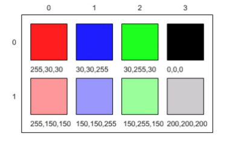
Figure4.43.1.Figure 1: RGB values and the resulting colors displayed in rows and columns
How does the computer represent the values from 0 to 255? A decimal number uses the digits 0 to 9 and powers of 10 to represent values. The decimal number 325 means 5 ones (100) plus 2 tens (101) plus 3 hundreds (102) for a total of three hundred and twenty-five. Computers use binary numbers, which use the digits 0 and 1 and powers of 2 to represent values using groups of bits. A bit is a binary digit, which can be either 0 or 1. A group of 8 bits is called a byte. The binary number 110 means 0 ones (20) plus 1 two (21) plus 1 four (22), for a total of 6.
. This is the full name for the Color class, which includes the package name of java.awt followed by a period and then the class name Color. Java groups related classes into packages. The awt stands for Abstract Windowing Toolkit, which is the package that contains the original Graphical User Interface (GUI) classes developed for Java. You can use just the short name for a class, like Color, as long as you include an import statement at the beginning of a class source file, as shown below. The Picture class contains the following import statement import java.awt.Color;.
Questions:
Exercise4.43.5.
6-4-7-4: Use the color chooser above to answer the following questions.
How can you make pink? What is the RGB values you used?
How can you make yellow? What are the RGB values that you used?
How can you make purple? What are the RGB values that you used?
How can you make white? What are the RGB values that you used?
How can you make dark gray? What are the RGB values that you used?
Subsection4.43.1.3A3: Exploring a Picture
Try the following PictureExplorer Java program and click on pixels in the image to see their RGB values and their row and column indices in the 2D array for the image. You can use the explorer tool to explore the pixels in a picture. Click any location (pixel) in the picture and it will display the row index, column index, and red, green, and blue values for that location. The location will be highlighted with yellow crosshairs. You can click on the arrow keys or even type in values and hit the enter button to update the display. You can also use the menu to change the zoom level.
where you can upload your own images and explore their RGB values. Images are often stored as jpg or jpeg files. A JPEG file is one that follows an international standard for storing picture data using lossy compression. Lossy compression means that the amount of data that is stored is much smaller than the available data, but the part that is not stored is data we won’t miss.
Exercise4.43.6.
6-4-7-5: What is the row index for the top left corner of the 640x480 beach picture?
0
Correct
180
Try running some more tests.
240
Try running some more tests.
90
Try running some more tests.
Exercise4.43.7.
6-4-7-6: What is the column index for the top left corner of the 640x480 beach picture?
0
Correct
180
Try running some more tests.
240
Try running some more tests.
90
Try running some more tests.
Exercise4.43.8.
6-4-7-7: What is the right most column index of the 640x480 beach picture? You can click on the Maximize button on the top right to see the scroll bars or use the right arrows.
100
Try running some more tests.
639
Correct
479
Try running some more tests.
700
Try running some more tests.
Exercise4.43.9.
6-4-7-8: What is the bottom most row index of the 640x480 beach picture? You can click on the Maximize button on the top right to see the scroll bars or use the right arrows.
180
Try running some more tests.
500
Try running some more tests.
639
Try running some more tests.
479
Correct
Exercise4.43.10.
6-4-7-9: Does the row index increase from left to right or top to bottom?
The row increases starting at the left and ending at the right.
Try running some more tests.
The row increases starting at the right and ending at the left.
Try running some more tests.
The row increases starting at the top and ending at the bottom.
Correct.
The row increases starting at the bottom and ending at the top.
Try running some more tests.
Exercise4.43.11.
6-4-7-10: Does the column index increase from left to right or top to bottom?
The column increases starting at the left and ending at the right.
Correct
The column increases starting at the right and ending at the left.
Try running some more tests.
The column increases starting at the top and ending at the bottom.
Try running some more tests.
The column increases starting at the bottom and ending at the top.
Try running some more tests.
Exercise4.43.12.
6-4-7-11: Use the Zoom menu to set the zoom to 500%. Can you see squares of color? This is called pixelation. What is pixelation?
This is when data is lost in the resizing of an image.
try again.
The intentional decreasing of resolution by merging adjacent pixels.
try again.
When an image is magnified to the point where you can see the pixels as small squares.
Correct
The modification of individual pixels.
try again.
Through your exploration, you have discovered that the top left corner coordinate for an image is (0,0) and the bottom left is (width, height) for the width and height of an image. In the next lessons, we will modify Java code to manipulate the color values of each pixel in 2D arrays.
Section4.43.2Picture Lab A4: 2D Arrays in Java
In this activity you will work with integer data stored in a two-dimensional array. Some programming languages use a one-dimensional (1D) array to represent a two-dimensional (2D) array with the data in either row-major or column-major order. Row-major order in a 1D array means that all the data for the first row is stored before the data for the next row in the 1D array. Column-major order in a 1D array means that all the data for the first column is stored before the data for the next column in the 1D array. The order matters, because you need to calculate the position in the 1D array based on the order, the number of rows and columns, and the current column and row numbers (indices). The rows and columns are numbered (indexed) and often that numbering starts at 0 as it does in Java. The top left row has an index of 0 and the top left column has an index of 0. The row number (index) increases from top to bottom and the column number (index) increases from left to right.
Figure4.43.1.Figure 1: A 2D array stored in row-major order or column-major order as a 1D array.
Java actually uses arrays of arrays to represent 2D arrays. This means that each element in the outer array is a reference to another array. The data can be in either row-major or column-major order. The AP Computer Science A course specification tells you to assume that all 2D arrays are row-major, which means that the outer array in Java represents the rows and the inner arrays represent the columns.
Figure4.43.2.Figure 2: Java arrays of arrays
To loop through the values in a 2D array you must have two indexes. One index is used to change the row index and one is used to change the column index. You can use nested loops, which is one for loop inside of another, to loop through all the values in a 2D array. Let’s try some nested loops with 2D arrays.
Here is the code for the getTotal method in the IntArrayWorker class that totals all the values in a 2D array of integers in a private instance variable (field in the class) named matrix. Notice the nested for loop and how it uses matrix.length to get the number of rows and matrix[0].length to get the number of columns. Since matrix[0] returns the inner array in a 2D array, you can use matrix[0].length to get the number of columns.
public int getTotal()
{
int total = 0;
for (int row = 0; row < matrix.length; row++)
{
for (int col = 0; col < matrix[0].length; col++)
{
total = total + matrix[row][col];
}
}
return total;
}
Because Java two-dimensional arrays are actually arrays of arrays, you can also get the total using nested for-each loops as shown in getTotalNested below. The outer loop will loop through the outer array (each of the rows) and the inner loop will loop through the inner array (columns in that row). You can use a nested for-each loop whenever you want to loop through all items in a 2D array and you don’t need to know the row index or column index.
public int getTotalNested()
{
int total = 0;
for (int[] rowArray : matrix)
{
for (int item : rowArray)
{
total = total + item;
}
}
return total;
}
|CodingEx| Coding Exercises
1. Write a getCount method in the IntArrayWorker class that returns the count of the number of times a passed integer value is found in the matrix. There is already a method to test this in IntArrayWorkerTester.
2. Write a getLargest method in the IntArrayWorker class that returns the largest value in the matrix. There is already a method to test this in IntArrayWorkerTester.
3. Write a getColTotal method in the IntArrayWorker class that returns the total of all integers in a specified column. There is already a method to test this in IntArrayWorkerTester.
ExercisesExercises
1.
6-4-7-1: Given an array A = { 2 4 6 }, {1 3 5} how would A be stored in a 1D array in row-major order?
[1, 2, 3, 4, 5, 6]
Remember, row-major order means the rows are stored starting from first to last.
[2, 1, 4, 3, 6, 5]
For row-major order, we need to store the rows which go horizontally across the array.
[2, 4, 6, 1, 3, 5]
Correct!
[1, 3, 5, 2, 4, 6]
Remember, row-major order means the rows are stored starting from first to last.
2.
6-4-7-2: Given an array A = { 2 4 6 }, {1 3 5} how would A be stored in a 1D array in column-major order?
[1, 2, 3, 4, 5, 6]
This answer has stored the columns, but they need to be stored from the lowest index to the highest.
[2, 1, 4, 3, 6, 5]
Correct
[2, 4, 6, 1, 3, 5]
We need to store this array in column-major order. The columns of the array are aligned vertically.
[1, 3, 5, 2, 4, 6]
We need to store this array in column-major order. The columns of the array are aligned vertically.
3.
6-4-7-3: Here is a mysteryMethod in the IntArrayWorker class that uses a private instance variable which is a 2D array named matrix. What does this method do?
public int mysteryMethod() {
int total = 0;
for (int row = 0; row < matrix.length; row++) {
for (int col = 0; col < matrix[0].length; col++) {
total = total + matrix[row][col];
}
}
return total;
}
It sums up all the values in the matrix[0] column
matrix[0].length is different from just the matrix column 0, what does matrix[0].length return? How does this affect the inner loop
This method sums up all the column and row indexes to find the matrix’s ‘weight’
This is not what the method does and matrix ‘weight’ does not exist.
This method finds the number of elements in a given 2D array.
The number of elements would be found through multiplying the rows by the columns.
This method finds the total of all the values in a 2D array of numbers.
correct!
4.
6-4-7-4: Which of these methods correctly sum up the values in a 2D array? Assume the 2D array is called matrix.
public int getSum() {
int total = 0;
int i = 0;
int j = 0;
while (matrix.length != 0) {
while (matrix[0].length != 0) {
total += matrix[i][j];
i++;
j++;
}
}
}
This method will continue forever and give an index out of bounds error.
public int getSum() {
int total = 0;
for (int[] rowArray : matrix) {
for (int item : rowArray) {
total = total + item;
}
}
return total;
}
Correct! This uses nested for each loops to iterate through the array.
public int getSum() {
int total = 0;
for (int i = 0; i < matrix.length; i++) {
for (int j = 0; j < matrix[0].length; j++) {
total = total + matrix[i][j];
}
}
return total;
}
Correct! This uses nested for loops to traverse through the matrix.
public int getSum() {
int total = 0;
int mystery = 0;
int row = 0;
while (row < matrix.length) {
for (int col = 0; j < matrix[0].length; i++) {
if (row % 2 == 0) {
total = total + matrix[row][col];
}
else {
mystery = mystery + matrix[row][col];
}
}
row++;
}
return (total - mystery);
}
This does not return the correct amount.
5.
Write a getCount method in the IntArrayWorker class that returns the count of the number of times a passed integer value is found in the matrix.
6.
Write a getLargest method in the IntArrayWorker class that returns the largest value in the matrix.
7.
Write a getColTotal method in the IntArrayWorker class that returns the total of all integers in a specified column.
Section4.43.3Picture Lab A5: Modifying a Picture
Even though digital pictures have millions of pixels, modern computers are so fast that they can process all of them quickly. You will write methods in the Picture class that modify digital pictures.
Subsection4.43.3.1Picture Classes: UML and Inheritance
The Picture class inherits attributes and methods from the SimplePicture class and the SimplePicture class implements the DigitalPicture interface as shown in the Unified Modeling Language (UML) class diagram in the figure below.
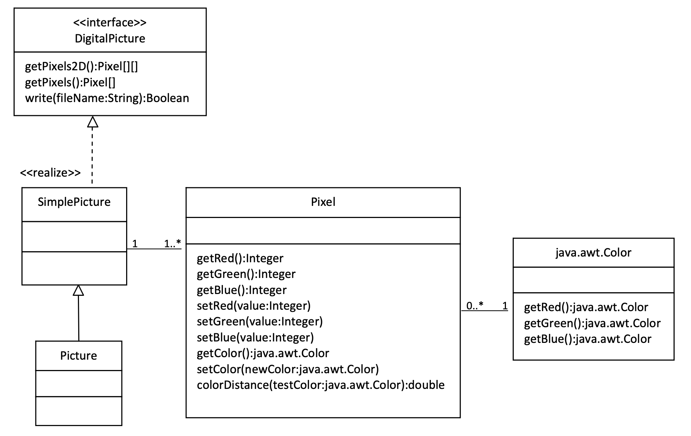
Figure4.43.1.Figure 1: A UML Class diagram
A UML class diagram shows classes and the relationships between the classes. Each class is shown in a box with the class name at the top. The middle area shows attributes (instance or class variables) and the bottom area shows methods. The open triangle points to the class that the connected class inherits from. The straight line links show associations between classes. Association is also called a “has-a” relationship. The numbers at the end of the association links give the number of objects associated with an object at the other end.
For example, it shows that one Pixel object has one Color object associated with it and that a Color object can have zero to many Pixel objects associated with it. You may notice that the UML class diagram doesn’t look exactly like Java code. UML isn’t language specific.
The following questions require some knowledge about inheritance which is covered in the next unit, Unit 9. You may want to come back to do these questions after Unit 9.
and click on Show files. Open Picture.java and look for the method getPixels2D. Is it there?
Yes
The Picture.java class does not have the getPixels2D() method defined in it but it inherits it from the class SimplePicture.
No, but it is inherited
Correct, this class inherits that method from the class SimplePicture.
2.
6-4-7-2: Open SimplePicture.java and look for the method getPixels2D. Is it there?
Yes
Yes, the SimplePicture class contains the method getPixels2D.
No
The SimplePicture class contains the method getPixels2D.
3.
6-4-7-3: This question is about interfaces which are not covered in the AP exam. Interfaces are like abstract templates of a class that specify the method headers but not the definitions. Does the following code compile? Try it in the main method if you do not know.
DigitalPicture p = new DigitalPicture();
yes
We cannot create an object from an interface because it is abstract.
no
Correct! We cannot create an object from an interface because it is abstract.
4.
6-4-7-4: This question is about interfaces which are not covered in the AP exam. Assuming that a no-argument constructor exists for SimplePicture, would the following code compile?
DigitalPicture p = new SimplePicture();
yes
Yes. The SimplePicture class implements the interface DigitalPicture which means it is a type of Digital Picture.
no
The SimplePicture class implements the interface DigitalPicture which means it is a type of Digital Picture.
5.
6-4-7-5: This question is about interfaces which are not covered in the AP exam. Assuming that a no-argument constructor exists for Picture, would the following code compile?
DigitalPicture p = new Picture();
yes
Yes, because Picture extends SimplePicture which implements the interface DigitalPicture.
no
Picture extends SimplePicture which implements the interface DigitalPicture.
6.
6-4-7-6: Assuming that a no-argument constructor exists for Picture, does the following code compile?
SimplePicture p = new Picture();
yes
Yes, because Picture extends SimplePicture which implements the interface DigitalPicture.
no
Picture extends SimplePicture which implements the interface DigitalPicture.
7.
6-4-7-7: Assuming that a no-argument constructor exists for SimplePicture, does the following code compile?
Picture p = new SimplePicture();
yes
Picture inherits from SimplePicture, but not the other way around.
no
Picture inherits from SimplePicture, but not the other way around.
Because DigitalPicture declares a getPixels2D method that returns a two-dimensional array of Pixel objects, SimplePicture implements that interface, and Picture inherits from SimplePicture, you can use the getPixels2D method on a Picture object. You can loop through all the Pixel objects in the two-dimensional array to modify the picture. You can get and set the red, green, and/or blue value for a Pixel object. You can also get and/or set the Color value for a Pixel object. For example,
Picture pict = new Picture("beach.jpg");
Pixel[][] pixels = pict.getPixels2D();
Pixel p = pixels[0][0]; // get the first pixel
int blue = p.getBlue(); // get its blue value
System.out.println("Pixel (0,0) has a blue value of " + blue );
p.setBlue(255); // set its blue value to 255
pict.show();
Subsection4.43.3.2Image Modification Exercises
What do you think you will see if you modify the beach picture to set all the blue values to zero? Do you think you will still see a beach? Run the main method in the Picture class in the Active Code below. The body of the main method will create a Picture object named beach from the “beach.jpg” file and call the method that sets the blue values at all pixels to zero. The following code is the main method from the Picture class.
public static void main(String[] args)
{
Picture pict = new Picture("beach.jpg");
pict.show(); // show the before picture
pict.zeroBlue();
pict.show(); // show the after picture
}
The method zeroBlue in the Picture class gets a two-dimensional array of Pixel objects from the current picture (the picture the method was called on). It then declares a variable that will refer to a Pixel object named pixelObj. It uses a nested for-each loop to loop through all the pixels in the picture. Inside the body of the nested for-each loop it sets the blue value for the current pixel to zero. Note that you cannot change the elements of an array when you use a for-each loop. If, however, the array elements are references to objects that have methods that allow changes, as they are here, you can change the internal state of objects referenced in the array.
The following code is the zeroBlue method in the Picture class.
public void zeroBlue()
{
Pixel[][] pixels = this.getPixels2D();
for (Pixel[] rowArray : pixels)
{
for (Pixel p : rowArray)
{
p.setBlue(0);
}
}
}
Another option is to use for loops with indices to visit each pixel in the picture:
public void zeroBlue()
{
Pixel[][] pixels = this.getPixels2D();
for (int row = 0; row < pixels.length; row++)
{
for (int col = 0 ; col < pixels[0].length; col++)
{
Pixel p = pixels[row][col];
p.setBlue(0);
}
}
}
|CodingEx| Coding Exercises
You may have done this exercise in the programming challenge in lesson 8.2. Using the zeroBlue method as a starting point, write the method keepOnlyBlue that will keep only the blue values, that is, it will set the red and green values to zero. Be sure to call the new test method in the main method.
You can use beach.jpg or one of the other images seen at the bottom of this lesson in the active codes below which are autograded. To use your own images, you can fork this replit.com Swing project 3
(click output.jpg to see the result) or download the project files form replit to your own IDE.
Exercise4.43.2.
Picture Lab keepOnlyBlue: Using zeroBlue() as a guide, write a method called keepOnlyBlue() that keeps only the blue values by setting the red and green values to zero. Change the method call in main from zeroBlue to keepOnlyBlue to test it. Try one of the other images below like metalLion.jpg, water.jpg, kitten.jpg, puppies.jpg, blueMotorcycle.jpg, or student.jpg.
2. Write the negate method to negate all the pixels in a picture. To negate a picture, set the red value to 255 minus the current red value (use the pixel’s getRed method), the green value to 255 minus the current green value and the blue value to 255 minus the current blue value. Be sure to call the new test method in the main method.
Exercise4.43.3.
Picture Lab negate: Write a method called negate() that negates all the pixels in a picture by setting the red value to 255 minus the current red value (use the pixel’s getRed() method), the green value to 255 minus the current green value and the blue value to 255 minus the current blue value. Try one of the other images below like beach.jpg, metalLion.jpg, water.jpg, kitten.jpg, puppies.jpg, blueMotorcycle.jpg, or student.jpg.
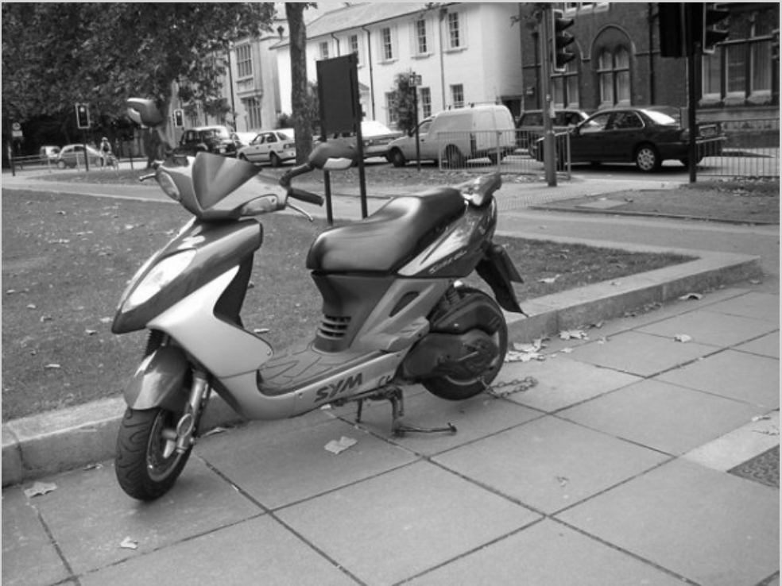
3. Write the grayscale method to turn the picture into shades of gray. Set the red, green, and blue values to the average of the current red, green, and blue values (add all three values and divide by 3). Be sure to call the new test method in the main method.
Exercise4.43.4.
Picture Lab Grayscale: Write a method called grayscale to turn the picture into shades of gray. Set the red, green, and blue values to the average of the current red, green, and blue values (add all three values and divide by 3). Try another image file from beach.jpg, metalLion.jpg, water.jpg, kitten.jpg, puppies.jpg, blueMotorcycle.jpg, student.jpg.
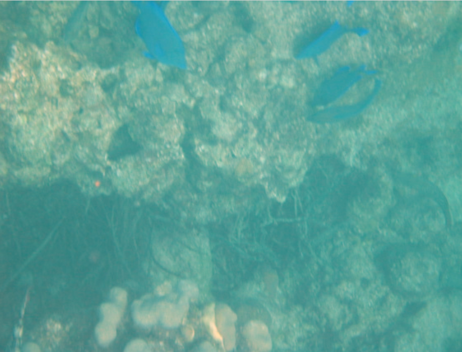
4. Challenge — Explore the water.jpg picture. Write a method fixUnderwater() to modify the pixel colors to make the fish easier to see. There are many ways to do this, but you could try increasing one of the colors by a certain factor. Here are some more complex algorithms for increasing the brightness and contrast of images https://ie.nitk.ac.in/blog/2020/01/19/algorithms-for-adjusting-brightness-and-contrast-of-an-image/ 5
Picture Lab fix-underwater: Write a method called fixUnderwater() to modify the pixel colors to make the fish easier to see. Try increasing one of the colors by a certain factor.
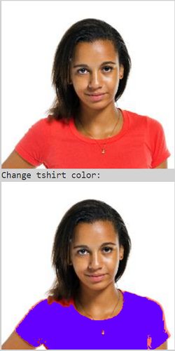
Extra Challenge — This exercise is not in the original picture lab. Can you change just the t-shirt color in student.jpg? You will need to use an if statement inside the loops to look for the red t-shirt color and then change it. The red pixels probably have a high red value (for example greater than 200) and low green and blue values (for example less than 100). After changing the t-shirt color, try changing the background color or the hair color.
Exercise4.43.6.
Can you change just the t-shirt color in student.jpg? You will need to use an if statement inside the loops to look for the red t-shirt color and then change it. The red pixels probably have a high red value (for example greater than 200) and low green and blue values (for example less than 100). After changing the t-shirt color, try changing the background color or the hair color.
Choose from these images:
Section4.43.4Picture Lab A6: Mirroring Pictures
Car designers at General Motors Research Labs only sculpt half of a car out of clay and then use a vertical mirror to reflect that half to see the whole car. What if we want to see what a picture would look like if we placed a mirror on a vertical line in the center of the width of the picture to reflect the left side (Figure 1)?
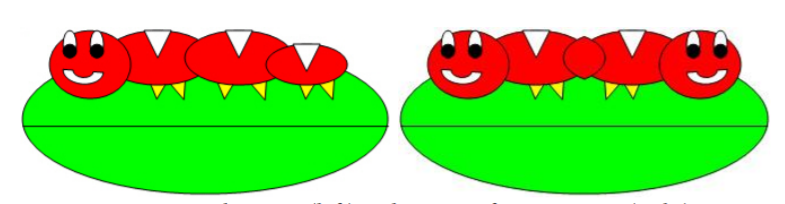
Figure4.43.1.Figure 1: Original picture (left) and picture after mirroring (right)
How can we write a method to mirror a picture in this way? One way to figure out the algorithm, which is a description of the steps for solving a problem, is to try it on smaller and simpler data. Figure 2 shows the result of mirroring a two-dimensional array of numbers from left to right vertically.
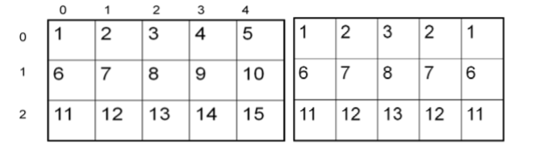
Figure4.43.2.Figure 2: Two-Dimensional array of numbers (left) and mirrored result (right)
Can you figure out the algorithm for this process? Test your algorithm on different sizes of twodimensional arrays of integers. Will it work for 2D arrays with an odd number of columns? Will it work for 2D arrays with an even number of columns?
One algorithm is to loop through all the rows and half the columns. You need to get a pixel from the left side of the picture and a pixel from the right side of the picture, which is the same distance from the right end as the left pixel is from the left end. Set the color of the right pixel to the color of the left pixel. The column number at the right end is the number of columns, also known as the width, minus one. So assuming there are at least 3 pixels in a row,
The first left pixel will be at row=0, col=0 and the first right pixel will be at row=0, col=width-1.
The second left pixel will be at row=0, col=1 and the corresponding right pixel will be at row=0, col=width-1-1.
The third left pixel will be at row=0, col=2 and its right pixel will be at row=0, col=width-1-2.
Each time the left pixel is at (current row value, current column value), the corresponding right pixel is at (current row value, width - 1 - (current column value)).
The following method implements this algorithm. Note that, because the method is not looping through all the pixels, it cannot use a nested for-each loop.
public void mirrorVertical()
{
Pixel[][] pixels = this.getPixels2D();
Pixel leftPixel = null;
Pixel rightPixel = null;
int width = pixels[0].length;
for (int row = 0; row < pixels.length; row++)
{
for (int col = 0; col < width / 2; col++)
{
leftPixel = pixels[row][col];
rightPixel = pixels[row][width - 1 - col];
rightPixel.setColor(leftPixel.getColor());
}
}
}
You can see mirrorVertical in action by running the active code in the exercise below.
|CodingEx| Coding Exercises
You can use caterpillar.jpg or one of the images seen at the bottom of this lesson in the active codes below which are autograded. To use your own images, you can fork this Replit Swing project 1
(click output.jpg to see the result) or download the project files form replit to your own IDE.
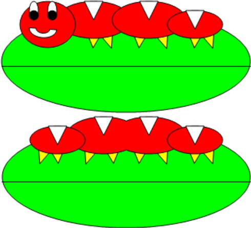
1. Write the method mirrorVerticalRightToLeft that mirrors a picture around a mirror placed vertically from right to left, so that you get 2 tails for the caterpillar instead of two heads. Hint: you can copy the body of mirrorVertical and only change one line in the body of the method to accomplish this.
2. Write the method mirrorHorizontal that mirrors a picture around a mirror placed horizontally at the middle of the height of the picture. Mirror from top to bottom as shown in the pictures below (Figure 3).
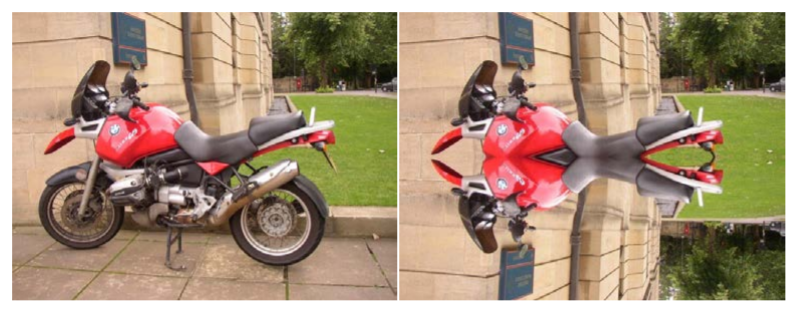
Figure4.43.3.Figure 3: Original picture (left) and mirrored from top to bottom (right)
Write the method mirrorHorizontalBotToTop that mirrors the picture around a mirror placed horizontally from bottom to top. Hint: you can copy the body of mirrorHorizontal and only change one line to accomplish this.
4. Challenge — Work in groups to figure out the algorithm for the method mirrorDiagonal that mirrors just a square part of the picture from bottom left to top right around a mirror placed on the diagonal line (the diagonal line is the one where the row index equals the column index). This will copy the triangular area to the left and below the diagonal line as shown below. This is like folding a square piece of paper from the bottom left to the top right, painting just the bottom left triangle and then (while the paint is still wet) folding the paper up to the top right again. The paint would be copied from the bottom left to the top right as shown in the pictures below (Figure 2).
Figure4.43.4.Figure 4: Original picture (left) and mirrored around the diagonal line with copying from bottom left to top right (right)
Choose from these images in this lesson. To use your own images, you can fork this Replit Swing project 3
(click output.jpg to see the result) or download the project files form replit to your own IDE.
ExercisesExercises
1.
Picture Lab A6 Mirroring: Write a method mirrorVerticalRightToLeft that mirrors a picture around a mirror placed vertically from right to left so that you get two tails for the caterpillar instead of two heads. Hint: you can copy the body of mirrorVertical and only change one line in the body of the method to accomplish this. Change the method call in the main method.
2.
Picture Lab A6 Mirroring: Write a method mirrorHorizontal that mirrors a picture around a mirror placed horizontally at the middle of the height of the picture from top to bottom. Change the bottom pixel to be the color of the top pixel.
3.
Picture Lab A6 Mirroring: Write the method mirrorHorizontalBotToTop that mirrors the picture around a mirror placed horizontally from bottom to top. Hint: you can copy the body of mirrorHorizontal and only change one line to accomplish this. Change the top pixel to the bottom pixel instead of the other way around.
4.
Picture Lab A6 Mirroring: Write a method method mirrorDiagonal that mirrors just a square part of the picture from bottom left to top right around a mirror placed on the diagonal line (the diagonal line is the one where the row index equals the column index).
Section4.43.5Picture Lab A7: Mirroring Part of a Picture
Sometimes you only want to mirror part of a picture. For example, Figure 1 shows a temple in Greece that is missing a part of the roof called the pediment. You can use the Picture Explorer Repl 1
to find the area that you want to mirror in temple.jpg to produce the picture on the right. If you do this you will find that you can mirror the rows from 27 to 96 (inclusive) and the columns from 13 to 275 (inclusive). You can change the starting and ending points for the row and column values to mirror just part of the picture.
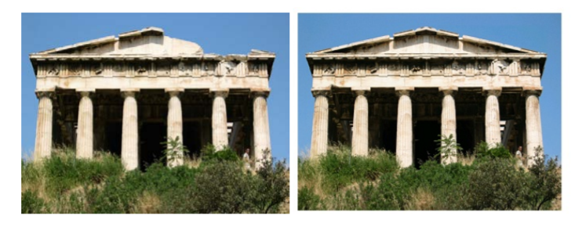
Figure4.43.1.Figure 1: Greek temple before (left) and after (right) mirroring the pediment
To work with just part of a picture, change the starting and ending values for the nested for loops as shown in the following mirrorTemple method. This method also calculates the distance the current column is from the mirrorPoint and then adds that distance to the mirrorPoint to get the column to copy to.
public void mirrorTemple()
{
int mirrorPoint = 276;
Pixel leftPixel = null;
Pixel rightPixel = null;
int count = 0;
Pixel[][] pixels = this.getPixels2D();
// loop through the rows
for (int row = 27; row < 97; row++)
{
// loop from 13 to just before the mirror point
for (int col = 13; col < mirrorPoint; col++)
{
leftPixel = pixels[row][col];
rightPixel = pixels[row][mirrorPoint - col + mirrorPoint];
rightPixel.setColor(leftPixel.getColor());
}
}
}
You can test this with the mirrorTemple method below.
How many times was leftPixel = pixels[row][col]; executed? The formula for the number of times a nested loop executes is the number of times the outer loop executes multiplied by the number of times the inner loop executes. The outer loop is the one looping through the rows, because it is outside the other loop. The inner loop is the one looping through the columns, because it is inside the row loop.
How many times does the outer loop execute? The outer loop starts with row equal to 27 and ends when it reaches 97, so the last time through the loop row is 96. To calculate the number of times a loop executes, subtract the starting value from the ending value and add one. The outer loop executes 96 – 27 + 1 times, which equals 70 times. The inner loop starts with col equal to 13 and ends when it reaches 276, so, the last time through the loop, col will be 275. It executes 275 – 13 + 1 times, which equals 263 times. The total is 70 * 263, which equals 18,410.
|CodingEx| Coding Exercises
1. Check the calculation of the number of times the body of the nested loop executes by adding an integer count variable to the mirrorTemple method that starts out at 0 and increments inside the body of the loop. Print the value of count after the nested loop ends.
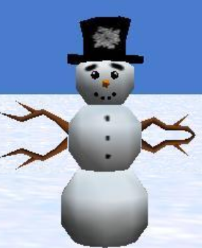
Write the method mirrorArms to mirror the arms on the snowperson (“snowperson.jpg”) to make a snowperson with 4 arms. Fork Picture Explorer Repl 2
and change it to explore snowperson.jpg and find out the pixel coordinates to start and end the mirroring and the mirror point.
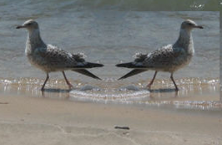
3. Write the method mirrorGull to mirror the seagull (“seagull.jpg”) to the right so that there are two seagulls on the beach near each other. Fork Picture Explorer Repl 3
and change it to explore seagull.jpg and find out the pixel coordinates to start and end the mirroring and the mirror point.
Images to use:
ExercisesExercises
1.
Picture Lab A7: Run to see mirrorTemple() working.
2.
6-4-7-2: How many times would the body of this nested for loop execute?
for (int row = 7; row < 17; row++)
for (int col = 6; col < 15; col++)
17
Don’t forget the inner loop.
17 - 7 = 10
Don’t forget the inner loop.
(17 - 7) * (15 - 6) = 90
Correct
17 * 15 = 255
The loops do not start at 0.
3.
6-4-7-3: How many times would the body of this nested for loop execute?
for (int row = 5; row <= 11; row++)
for (int col = 3; col <= 18; col++)
11
Don’t forget the inner loop.
11 - 5 = 6
Don’t forget the inner loop.
(11 - 5) * (18 - 3) = 90
Notice that these loops use <=
(11 - 5 + 1) * (18 - 3 + 1) = 112
Yes, the loops do not start at 0 and use <=.
4.
Picture Lab A7 Mirroring: Check the calculation of the number of times the body of the nested loop executes by adding an integer count variable to the mirrorTemple method that starts out at 0 and increments inside the body of the loop. Print the value of count after the nested loop ends which should be 18410.
5.
Picture Lab A7 Mirroring: Write the method mirrorArms to mirror the arms on the snowperson (“snowperson.jpg”) to make a snowperson with 4 arms.
6.
Picture Lab A7 Mirroring: Write the method mirrorGull to mirror the seagull (“seagull.jpg”) to the right so that there are two seagulls on the beach near each other.
Section4.43.6Picture Lab A8: Creating a Collage
You can copy one picture to another by copying the color from the pixels in one picture to the pixels in the other picture. To do this you will need to keep track of the row and column information for both the picture you are copying from and the picture you are copying to, as shown in the following copy method. The easiest way to do this is to declare and initialize both a fromRow and toRow in the outer for loop and increment them both at the end of the loop. A for loop can have more than one variable declaration and initialization and/or modification. Just separate the items with commas. The inner loop in this code uses that to create two loop variables, fromCol and a toCol which are both declared, initialized, and incremented.
You can create a collage by copying several small pictures onto a larger picture. You can do some picture manipulations like zero blue before you copy the picture as well. You can even mirror the result to get a nice artistic effect (Figure 1).
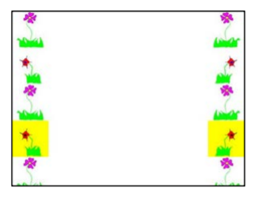
Figure4.43.1.Figure 1: Collage with vertical mirror
The following method shows how to create a simple collage using the copy method.
public void createCollage()
{
Picture flower1 = new Picture("flower1.jpg");
Picture flower2 = new Picture("flower2.jpg");
this.copy(flower1,0,0);
this.copy(flower2,100,0);
this.copy(flower1,200,0);
Picture flowerNoBlue = new Picture(flower2);
flowerNoBlue.zeroBlue();
this.copy(flowerNoBlue,300,0);
this.copy(flower1,400,0);
this.copy(flower2,500,0);
this.mirrorVertical();
this.show();
}
You can test this with the createCollage method below.
|CodingEx| Coding Exercises
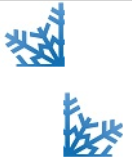
1. Create a second copy method called copyPartial that adds parameters to allow you to copy just part of the fromPic. You will need to add parameters that specify the start row, end row, start column, and end column to copy from.
2. Create a myCollage method that has at least three pictures (can be the same picture) copied three times with three different picture manipulations and at least one mirroring. You can use the pictures flower1.jpg, flower2.jpg, snowflake.jpg, butterfly.jpg in this lesson. To use your own images, you can fork this replit.com Swing project 1
(click output.jpg to see the result) or download the project files form replit to your own IDE.
You can use these images in this lesson:
ExercisesExercises
1.
Picture Lab A8: Run to see createCollage() working.
2.
Picture Lab A8: Create a second copy method called copyPartial that adds parameters to allow you to copy just part of the fromPic. You will need to add parameters that specify the start row, end row, start column, and end column to copy from. Use it in your collage.
3.
Picture Lab A8: Create a myCollage method that has at least three pictures (can be the same picture) copied three times with three different picture manipulations and at least one mirroring.
Detecting edges is a common image processing problem. For example, digital cameras often feature face detection. Some robotic competitions require the robots to find a ball using a digital camera, so the robot needs to be able to “see” a ball. One way to look for an edge in a picture is to compare the color at the current pixel with the pixel in the next column to the right. If the colors differ by more than some specified amount, this indicates that an edge has been detected and the current pixel color should be set to black. Otherwise, the current pixel is not part of an edge and its color should be set to white (Figure 1).
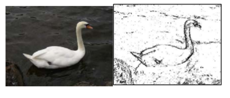
Figure4.43.1.Figure 1: Original picture and after edge detection
How do you calculate the difference between two colors? The formula for the difference between two points (x1,y1) and (x2,y2) is the square root of ((x2 - x1)2 + (y2 - y1)2 ). The difference between two colors (red1,green1,blue1) and (red2,green2,blue2) is the square root of ((red2 - red1)2 +(green2 - green1)2 +(blue2 - blue1)2 ). The colorDistance method in the Pixel class uses this calculation to return the difference between the current pixel color and a passed color.
The following method implements this simple algorithm. Notice that the nested for loop stops earlier than when it reaches the number of columns. That is because in the nested loop the current color is compared to the color at the pixel in the next column. If the loop continued to the last column this would cause an out-of-bounds error.
public void edgeDetection(int edgeDist)
{
Pixel leftPixel = null;
Pixel rightPixel = null;
Pixel[][] pixels = this.getPixels2D();
Color rightColor = null;
for (int row = 0; row < pixels.length; row++)
{
for (int col = 0; col < pixels[0].length-1; col++)
{
leftPixel = pixels[row][col];
rightPixel = pixels[row][col+1];
rightColor = rightPixel.getColor();
if (leftPixel.colorDistance(rightColor) > edgeDist)
leftPixel.setColor(Color.BLACK);
else
leftPixel.setColor(Color.WHITE);
}
}
}
You can test this with the edgeDetection method below.
Exercise4.43.2.
Picture Lab A9: Run to see edgeDetection working.
|CodingEx| Coding Exercises
1. Notice that the current edge detection method works best when there are big color changes from left to right but not when the changes are from top to bottom. Add another nested loop that compares the current pixel with the pixel below it and sets the current pixel color to black as well when the color distance is greater than the specified edge distance.
Exercise4.43.3.
Picture Lab A9: Improve the edgeDetection method by adding another nested loop that compares the current pixel with the pixel below it and sets the current pixel color to black as well, when the color distance is greater than the specified edge distance.
Work in groups to come up with another algorithm for edge detection and test it below.
Exercise4.43.4.
Picture Lab A9: Come up with another algorithm for edgeDetection in a method called myEdgeDetection.
Choose from these images in this lesson. To use your own images, you can fork this replit.com Swing project 1
(click output.jpg to see the result) or download the project files form replit to your own IDE.
Subsection4.43.7.2How image processing is related to new scientific breakthroughs
Many of today’s important scientific breakthroughs are being made by large, interdisciplinary collaborations of scientists working in geographically widely distributed locations, producing, collecting, and analyzing vast and complex datasets.
One of the computer scientists who works on a large interdisciplinary scientific team is Dr. Cecilia Aragon. She is an associate professor in the Department of Human Centered Design & Engineering and the eScience Institute at the University of Washington, where she directs the Scientific Collaboration and Creativity Lab. Previously, she was a computer scientist in the Computational Research Division at Lawrence Berkeley National Laboratory for six years, after earning her Ph.D. in Computer Science from UC Berkeley in 2004. She earned her B.S. in mathematics from the California Institute of Technology.
Her current research focuses on human-computer interaction (HCI) and computer-supported cooperative work (CSCW) in scientific collaborations, distributed creativity, information visualization, and the visual understanding of very large data sets. She is interested in how social media and new methods of computer-mediated communication are changing scientific practice. She has developed novel visual interfaces for collaborative exploration of very large scientific data sets, and has authored or co-authored many papers in the areas of computer-supported cooperative work, human-computer interaction, visualization, visual analytics, image processing, machine learning, cyberinfrastructure, and astrophysics.
In 2008, she received the Presidential Early Career Award for Scientists and Engineers (PECASE) for her work in collaborative data-intensive science. Her research has been recognized with four Best Paper awards since 2004, and she was named one of the Top 25 Women of 2009 by Hispanic Business Magazine. She was the architect of the Sunfall data visualization and workflow management system for the Nearby Supernova Factory, which helped advance the study of supernovae in order to reduce the statistical uncertainties on key cosmological parameters that categorize dark energy, one of the grand challenges in physics today.
Cecilia Aragon is also one of the most skilled aerobatic pilots flying today. A two-time member of the U.S. Aerobatic Team, she was a medalist at the 1993 U.S. National Championships and the 1994 World Aerobatic Championships, and was the California State Aerobatic Champion.
Subsection4.43.7.3Steganography Lab
If you enjoyed this lab and have time, continue on with the Steganography Lab 3
that continues on from the Picture Lab and explores hiding messages in images. The teacher guide and the code files are available in the AP Course Audit Portal.